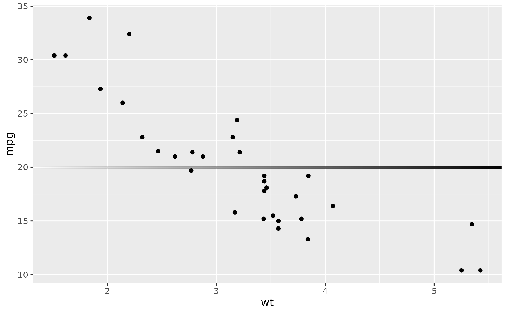
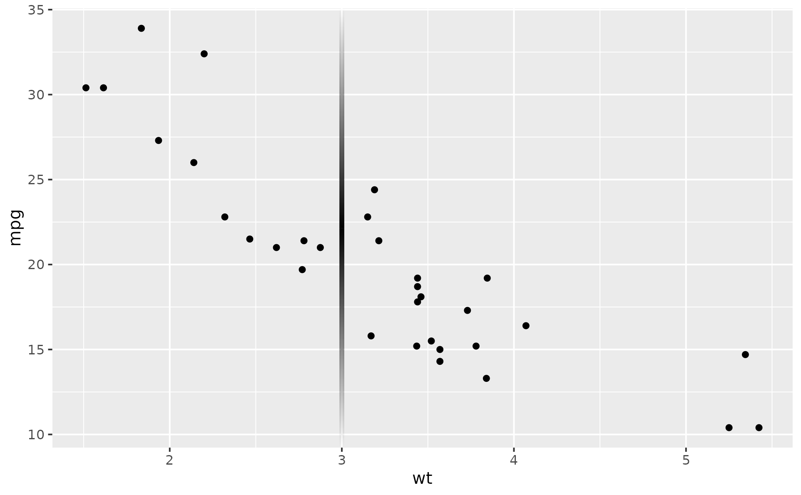
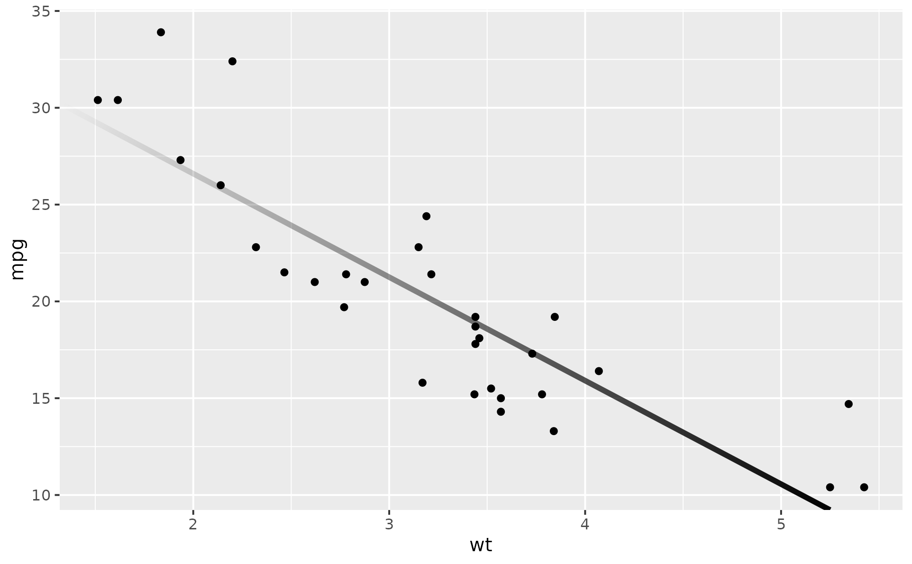

These geoms draw reference lines – horizontal, vertical, or diagonal – with an alpha gradient along the line so that one or both ends fade to transparent.
Like their ggplot2 counterparts, these geoms can be used as annotations by
passing slope/intercept, yintercept, or xintercept as arguments
directly. In that case the line is constant across facets.
To vary lines across facets, supply your own data and mapping.
Usage
geom_abline_fade(
mapping = NULL,
data = NULL,
stat = "identity",
...,
slope,
intercept,
alpha_fade_to = 0,
fade_direction = "start",
na.rm = FALSE,
show.legend = NA,
inherit.aes = FALSE
)
geom_hline_fade(
mapping = NULL,
data = NULL,
stat = "identity",
position = "identity",
...,
yintercept,
alpha_fade_to = 0,
fade_direction = "start",
na.rm = FALSE,
show.legend = NA,
inherit.aes = FALSE
)
geom_vline_fade(
mapping = NULL,
data = NULL,
stat = "identity",
position = "identity",
...,
xintercept,
alpha_fade_to = 0,
fade_direction = "start",
na.rm = FALSE,
show.legend = NA,
inherit.aes = FALSE
)Arguments
- mapping
Set of aesthetic mappings created by
ggplot2::aes().- data
A data frame, or other object, to override the plot data.
- stat
The statistical transformation to use on the data for this layer. When using a
geom_*()function to construct a layer, thestatargument can be used to override the default coupling between geoms and stats. Thestatargument accepts the following:A
Statggproto subclass, for exampleStatCount.A string naming the stat. To give the stat as a string, strip the function name of the
stat_prefix. For example, to usestat_count(), give the stat as"count".For more information and other ways to specify the stat, see the layer stat documentation.
- ...
Other arguments passed on to
layer()'sparamsargument. These arguments broadly fall into one of 4 categories below. Notably, further arguments to thepositionargument, or aesthetics that are required can not be passed through.... Unknown arguments that are not part of the 4 categories below are ignored.Static aesthetics that are not mapped to a scale, but are at a fixed value and apply to the layer as a whole. For example,
colour = "red"orlinewidth = 3. The geom's documentation has an Aesthetics section that lists the available options. The 'required' aesthetics cannot be passed on to theparams. Please note that while passing unmapped aesthetics as vectors is technically possible, the order and required length is not guaranteed to be parallel to the input data.When constructing a layer using a
stat_*()function, the...argument can be used to pass on parameters to thegeompart of the layer. An example of this isstat_density(geom = "area", outline.type = "both"). The geom's documentation lists which parameters it can accept.Inversely, when constructing a layer using a
geom_*()function, the...argument can be used to pass on parameters to thestatpart of the layer. An example of this isgeom_area(stat = "density", adjust = 0.5). The stat's documentation lists which parameters it can accept.The
key_glyphargument oflayer()may also be passed on through.... This can be one of the functions described as key glyphs, to change the display of the layer in the legend.
- alpha_fade_to
A single finite number between 0 and 1. The alpha value at the fading end(s). Defaults to
0(fully transparent).- fade_direction
Which end(s) of the line fade. A character vector containing
"start","end", or bothc("start", "end"). Defaults to"start". For horizontal lines,"start"fades the visual left end; for vertical lines,"start"fades the visual bottom end; for diagonal lines,"start"fades toward the visual left edge of the panel. See Gradient direction and reversed scales for behaviour underggplot2::scale_x_reverse()/ggplot2::scale_y_reverse().- na.rm
If
FALSE, the default, missing values are removed with a warning. IfTRUE, missing values are silently removed.- show.legend
logical. Should this layer be included in the legends?
NA, the default, includes if any aesthetics are mapped.FALSEnever includes, andTRUEalways includes. It can also be a named logical vector to finely select the aesthetics to display. To include legend keys for all levels, even when no data exists, useTRUE. IfNA, all levels are shown in legend, but unobserved levels are omitted.- inherit.aes
If
FALSE, overrides the default aesthetics, rather than combining with them. This is most useful for helper functions that define both data and aesthetics and shouldn't inherit behaviour from the default plot specification, e.g.annotation_borders().- position
A position adjustment to use on the data for this layer. This can be used in various ways, including to prevent overplotting and improving the display. The
positionargument accepts the following:The result of calling a position function, such as
position_jitter(). This method allows for passing extra arguments to the position.A string naming the position adjustment. To give the position as a string, strip the function name of the
position_prefix. For example, to useposition_jitter(), give the position as"jitter".For more information and other ways to specify the position, see the layer position documentation.
- xintercept, yintercept, slope, intercept
Parameters that control the position of the line. If these are set,
data,mappingandshow.legendare overridden.
Value
A ggplot2::layer() object that can be added to a ggplot2::ggplot().
Details
Gradient direction and reversed scales
The fade direction is defined in visual (panel) space, not in data
space. fade_direction = "start" always makes the start of the line
transparent – for horizontal lines this is the visual left edge; for
vertical lines, the visual bottom edge – regardless of whether the x or y
scale is reversed. So fade_direction = "start" means "transparent at
the left/bottom panel edge" irrespective of axis direction.
If you do want the gradient to track the data direction – making the
low-value end transparent even when it appears on the visual right – pass
fade_direction = "end" to override the default:
# On a reversed x-axis, "end" fades toward larger x values (visual left)
p + scale_x_reverse() +
geom_hline_fade(yintercept = 20, fade_direction = "end")Non-linear coordinate systems (coord_polar / coord_radial)
Under non-linear coordinate systems the "line" is conceptually a curve in device space:
geom_hline_fade()traces a circle at the givenyintercept(constant radius).geom_vline_fade()traces a ray at the givenxintercept(constant angle).geom_abline_fade()traces a curve that spirals or arcs based on the slope/intercept.
The fade is applied along the path length of that curve, so
fade_direction = "start" fades the beginning of the traced path. For an
hline_fade() circle the "start" is the first vertex of the traced
circle (at the leftmost angle of the coord system, 12 o'clock by default),
which may not match intuition from cartesian use – pass
fade_direction = "end" to reverse.
Internally, the line is subdivided into a dense set of vertices in data space before the coord transform so the curve appears smooth. This is transparent to the user but explains why the grob carries more vertices than in the linear case.
References
Murrell, P., Pedersen, T. L., and Skintzos, P. (2023). "Porter-Duff Compositing Operators in R Graphics." Department of Statistics, The University of Auckland. Version 1. https://www.stat.auckland.ac.nz/~paul/Reports/GraphicsEngine/compositing/compositing.html
Murrell, P. (2023). "Groups, Compositing Operators, and Affine Transformations in R Graphics." Technical Report 2021-02, Department of Statistics, The University of Auckland. Version 3. https://www.stat.auckland.ac.nz/~paul/Reports/GraphicsEngine/groups/groups.html
See also
geom_segment_fade() for fading line segments with explicit
endpoints, geom_path_fade() and geom_line_fade() for connected paths;
ggplot2::geom_abline(), ggplot2::geom_hline(), and ggplot2::geom_vline()
for their ggplot2 originals.
Aesthetics
geom_segment_fade() understands the following aesthetics. Required aesthetics are displayed in bold and defaults are displayed for optional aesthetics:
| • | x | |
| • | y | |
| • | xend | |
| • | yend | |
| • | alpha | → NA |
| • | colour | → via theme() |
| • | group | → inferred |
| • | linetype | → via theme() |
| • | linewidth | → via theme() |
Learn more about setting these aesthetics in vignette("ggplot2-specs").
Examples
library(ggplot2)
p <- ggplot(mtcars, aes(wt, mpg)) + geom_point()
# Horizontal reference line, fading from the left
p + geom_hline_fade(yintercept = 20, linewidth = 1.5)

# Vertical line fading at both ends
p + geom_vline_fade(xintercept = 3, linewidth = 1.5,
fade_direction = c("start", "end"))

# Diagonal line of best fit, fading from the left
coefs <- coef(lm(mpg ~ wt, data = mtcars))
p + geom_abline_fade(intercept = coefs[1], slope = coefs[2], linewidth = 1.5)
